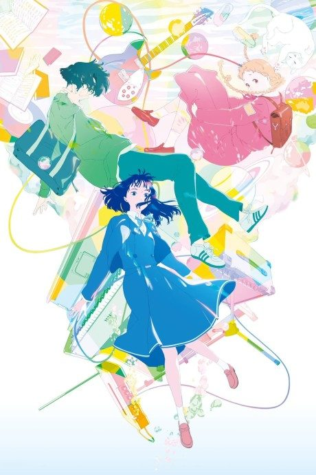

The Colors Within
きみの色
Totsuko, a girl who can see people's colours, forms a band with two classmates.
An original anime, so there's no book to continue with.
7.7AniList score
—Animeter, no votes yet
1film
Rate it or report where you stopped
Is it worth watching?
The drop map is for series. Rate the film above to add to its Animeter score.
More like The Colors Within
 Manga Ch. 228.7
Manga Ch. 228.7
 Original8.3
Original8.3
 Original8.0
Original8.0
 Film8.4
Film8.4
 Manga Ch. 438.5
Manga Ch. 438.5
 Original7.6
Original7.6
 Manga Ch. 248.1
Manga Ch. 248.1
 Manga Ch. 157.5
Manga Ch. 157.5
 Done7.8
Done7.8
 Unclear7.5
Unclear7.5
 Film7.3
Film7.3
 Done8.5
Done8.5